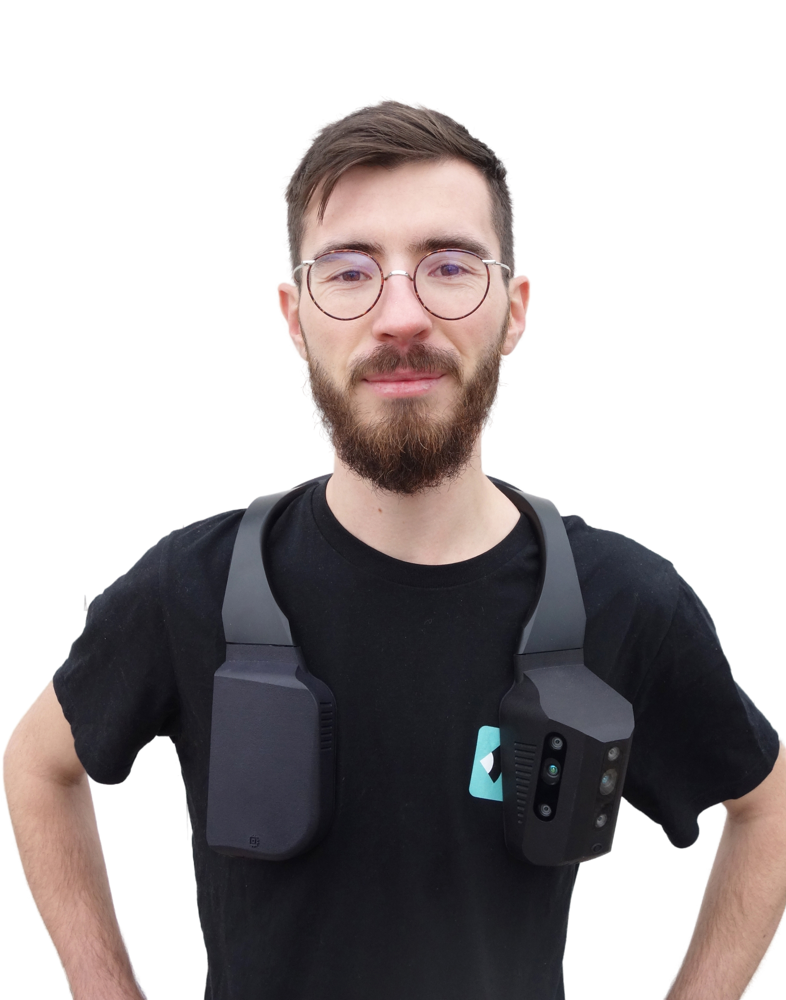
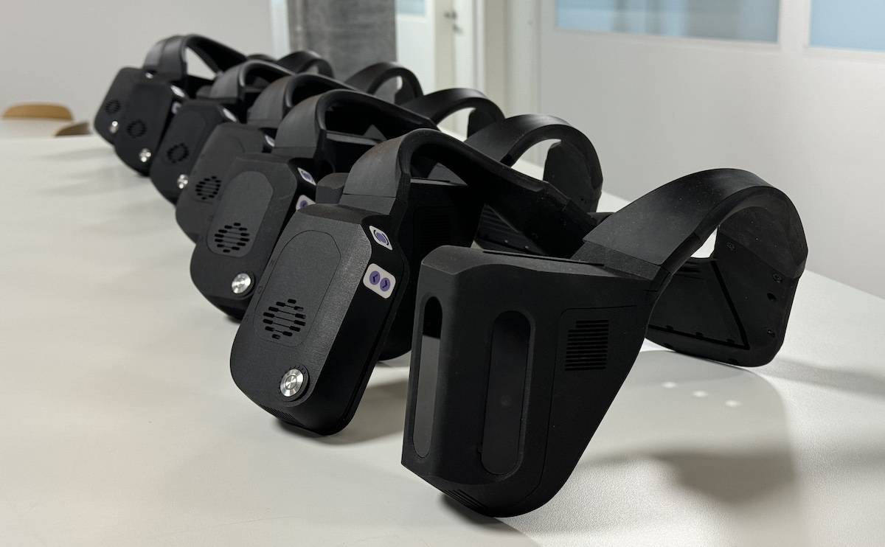

Hi, I'm Paul
Robotics Engineer
Experienced robotics engineer specializing in computer vision, simulation, and human-robot interaction. Passionate about building systems that bridge the gap between research and real-world applications.

About Me
With a background in robotics and computer vision, I've worked on projects ranging from simulation environments for visually impaired assistance devices to human-robot interaction systems. My expertise includes ROS, depth sensing, bio-inspired locomotion, and multi-robot systems.
Experience
From robotics studies at EPFL to 3.5 years building an assistive navigation platform for blind and visually impaired users at Biped, where I grew from core engineer to CTO leading a team of 4 engineers.
Publications
Projects

Biped NOA
Wearable assistive navigation platform for blind users with real-time 3D perception and AI scene descriptions
biped Work Project
Real2Sim
Synthetic data generation pipeline for computer vision algorithms using Webots simulator
biped Work Project
3D Vision for Robotised Wheelchair
Obstacle detection and crossing for a legged-wheeled robot using depth sensing
EPFL Student Project
Bio-inspired Locomotion Controller
Sensitivity analysis and optimization of reflex parameters for bipedal locomotion
EPFL Student Project
Human-Robot Interaction
Human-aware navigation and multi-robot task allocation in social environments
EPFL Student Project
Brain Computer Interaction
Decoding of motor termination in imagined movement using EEG data
EPFL Student Project